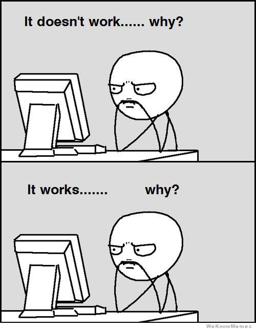

What is refactoring?
As described by Martin Fowler It is change made to the internal structure of a software program to make it easier to understand and modify without changing its overall behavior.
As described by me refactoring is cleaning up the code
Why to Refactor?
It improves design of software
It helps program eaiser to understand and modify
Sometimes helps find corner case in program
When to Refactor
When not to refactor?
1. 
2. When you dont have strong TEST CASE to confirm changes (Haha I told you)
How to decide whether a given program needs refactoring?
Lets Refactor
Dilemma of extracting modules and class
When working through a snippet of code I like to ask myself the following questions:
I think module
Intrepreter dosent care whether the code is ugly or not. But programer care. Programmer are human. So for the sake of humanity REFATCOR!!